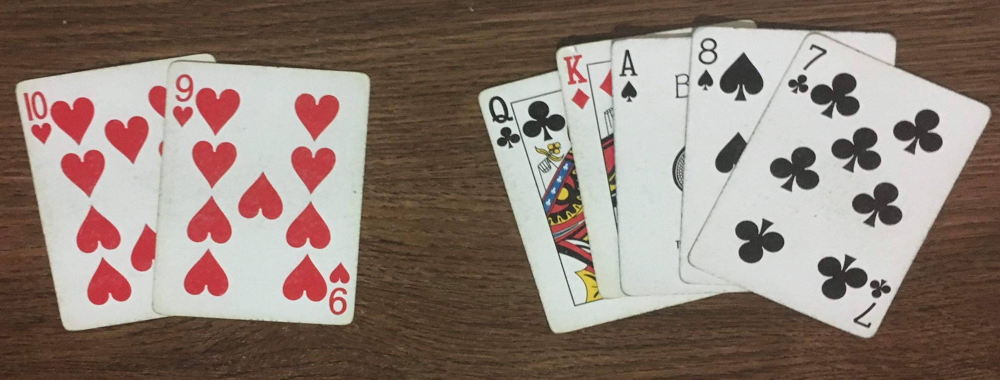

The most important thing to remember is that if you are not leading (i.e. playing the first card of the trick), you MUST follow suit. That means that if the first card
played was the eight of spades, you must play a spade if you have one (recall that the queen and jack of spades do not count). However, if you do not have any fail spades,
you can play whatever you want. Due to the vast number of hand combinations possible in sheepshead, it is impossible to cover every scenario. Here we have listed some examples
that may be similar to something that you would face during a game.
A leaster is a special type of sheepshead hand, so a lot of the intuitions from a normal hand of sheepshead do not apply. If you are playing a leaster and get to lead,
it's best to lead a low fail that you know will not take a trick. Alternatively, a low trump would also work. Specific cards to consider would be any sevens, eights, or nines.
When leasters are played, it is usually the case that the cards are spread out evenly amongst the players (hence the fact that no one picked). Therefore, you will usually
just have to follow suit. If you have one high trump, it is good to save it until there is a trick that is not worth a lot of points. If you take a trick with few points you
will have a good chance to win! Another situation is if there is a trick that does not have a lot of points, but you are only the second or third player to play a card.
In this case, it is a good idea to put points on it yourself to make a player playing after you have to take them (see below).
1. It's your lead.

As described above, it's a good idea to lead a card that you know will not take the trick. Probably the best options are the nine of clubs or the nine of hearts, as these
are worth no points and will more than likely not take the trick. The eight of spades is another option, although it could be nice to keep it as protection so that you
aren't forced to play the ten of spades and take a trick with it. You could also play the king of diamonds, although it would probably be better to save your trump so
that you can take a trick that is not worth a lot of points with your queen. If you play the king now you will have no protection if someone plays trump later, and you
might miss out on taking a trick.
2. It's your turn to play.

Assume that the cards at the left of the image have been played on the current trick. You do not have any hearts, so you can play whatever you want. Since it's a leaster,
the fact that ten points have already been played is bad. Chances are someone after you may add more points onto the trick. Therefore, you probably do not want to take
this trick. The best play would be to add more points to it, as you don't want the last person getting lucky and taking a trick that only has ten points at the end.
Therefore, playing the ace of spades would probably be best, as it will likely knock whoever takes the trick out of contention.